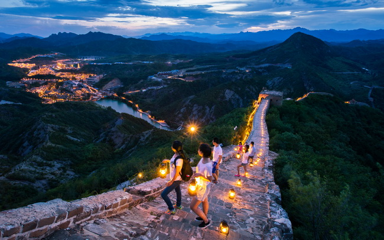
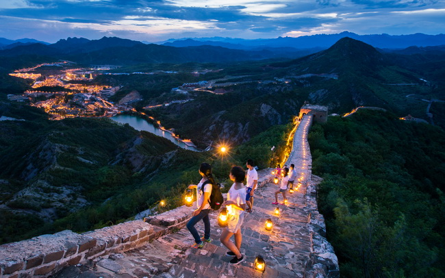
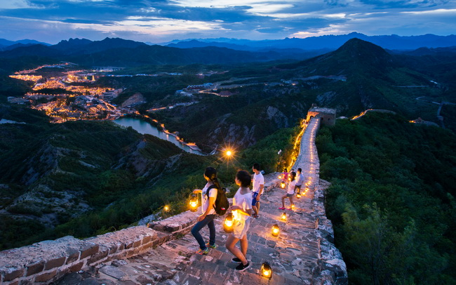
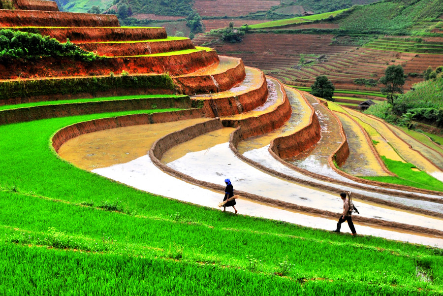
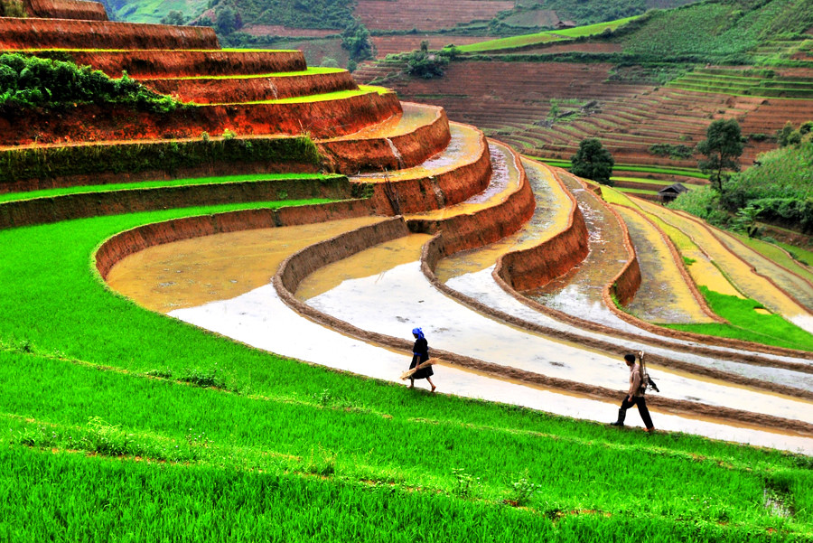

.jpg) 

La Grande Muraille de Chine est l'une des sept merveilles du monde et le symbole le plus représentatif de la Chine.
D'une longueur de 8 851,8 kilomètres, la Grande Muraille de Chine réalise une traversée sinueuse au milieu des
montagnes, des déserts et des plaines de la géographie chinoise.
Actuellement, la plus grande partie du mur est en ruines. Heureusement, certaines sections ont été entièrement
restaurées pour retrouver leur aspect d'origine.

Construite en une quinzaine d’années sous la dynastie Ming au XVe siècle, la Cité interdite est l’un des rares témoignages du passé conservé en Chine. Ce palais, le plus grand du monde en superficie (720 hectares), est aussi l’un des plus visités : Deng Xiaoping souhaitait que tous les Chinois le découvrent au moins une fois dans leur vie. Avant d’être ouverte au public en 1925 cependant, la “tanière du dragon” était un lieu fermé, interdit : une cité conçue pour incarner la puissance de l’empereur, le fils du ciel, où l'architecture et l'agencement des bâtiments ne sont jamais laissés au hasard.
Aménagées sur les pentes de collines ou de véritables montagnes selon les endroits, les rizières en terrasses sont
cultivées par les minorités. Certaines datent de centaines, voire de milliers d’années. Elles constituent des sites très
prisés par les randonneurs et les photographes.
De nombreux villages Zhuang et Yao se nichent parmi ces rizières en terrasses. Leurs maisons en bois à l'architecture
particulière, et les femmes vêtues de tenues traditionnelles colorées forment un tableau tout à fait dépaysant, qui
invite à partir à la découverte des coutumes propres à ces peuples.
 
